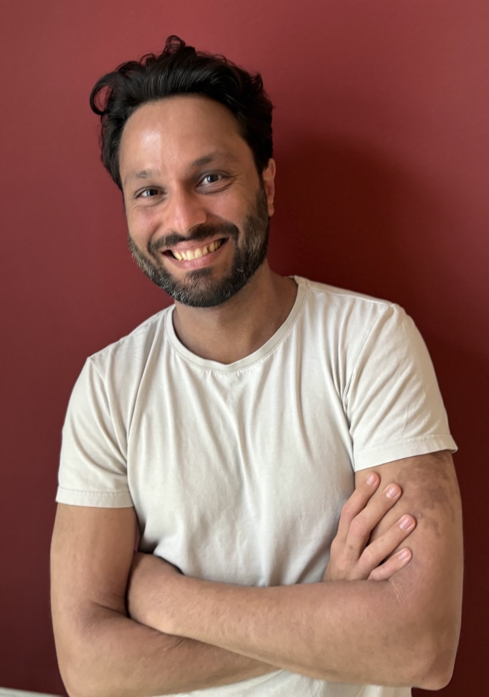

About Me
Hey there! I’m Nick Dogkas — a developer who loves blending creativity with clean code
With a background in maritime commercial shipping, I bring an operational mindset shaped by complex systems, tight constraints, and real-world accountability. Managing vessel employment and negotiating long-term leasing agreements in volatile markets required structured thinking, clear communication, and the ability to make sound decisions under pressure. Today, I apply that same mindset to web development and data-driven systems. I work across the stack with a focus on building reliable, maintainable applications that handle real-world data, integrate multiple systems, and support meaningful workflows. My experience spans backend development, data integration, and cloud-based deployment, with an emphasis on clarity, robustness, and long-term maintainability. I’m motivated by problems where technology supports people rather than chasing novelty. My goal is to contribute to teams building dependable digital systems, especially in contexts where data quality, traceability, and collaboration matter as much as features.
Enthusiastic about tech
Technology genuinely excites me, especially when it reveals how complex systems can be made understandable and dependable. I’m deeply curious about how data moves through applications, how backend decisions shape long-term behavior, and how infrastructure choices influence reliability at scale. Whether I’m refining data pipelines, designing APIs, or improving system performance, I care about building solutions that hold up under real-world conditions. I actively invest time in learning by studying technical documentation, reading in-depth articles, and engaging with open-source communities where practical challenges are discussed openly. What excites me most is applying that knowledge to create systems that are not only functional, but resilient, transparent, and a pleasure to work with over time. Turning complexity into something stable and usable is where I find real satisfaction.

Contact
Email: nickdogkas@gmail.com
Interests
- 🚵♂️ Mountain Biking
- 🎸 Heavy Metal
- 📚 Books, Books, Books
- 🏺 History
- 🌍 Traveling
Where I Lived & Studied
📍 Piraeus, Greece – Born, raised and started my career
📍 London, UK – Studied Shipping and Transport
📍 Hamburg,📍 Lüneburg,📍 Göttingen, Germany – Continued working and studied Software Development